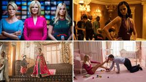

Male Gaze
La mirada masculina
El concepto de Male Gaze (“mirada masculina”) describe la forma en que muchas representaciones visuales muestran a las mujeres desde una perspectiva masculina heterosexual, convirtiéndolas en objetos de deseo y contemplación.
Esta idea fue desarrollada por la teórica feminista Laura Mulvey, quien explicó cómo el cine, la pintura y la publicidad construyen imágenes donde el espectador es asumido como hombre y la mujer aparece como objeto visual pasivo.
“La mujer no es mostrada como sujeto de la historia, sino como aquello que debe ser observado.”
¿Cómo funciona el Male Gaze?
En muchas obras artísticas, la cámara o la mirada del artista fragmenta el cuerpo femenino: primeros planos de piernas, labios, escotes o posturas vulnerables.
Esto reduce a la mujer a una experiencia estética, ignorando su pensamiento, emociones o autonomía.
A lo largo de la historia del arte y el cine, las mujeres han sido representadas como personajes en peligro, musas silenciosas o figuras cuya existencia gira alrededor de los hombres.
Representación visual

La imagen femenina suele presentarse para ser observada, admirada o consumida visualmente. La composición, la iluminación y los ángulos refuerzan una relación desigual entre quien observa y quien es observado.
Consecuencias culturales
El problema del Male Gaze no es únicamente artístico; también tiene consecuencias sociales.
Cuando la cultura representa constantemente a las mujeres como objetos visuales, se normaliza la idea de que su valor principal está en su apariencia física.
Esto influye en la forma en que las mujeres son tratadas, observadas y juzgadas dentro de la sociedad.
“La forma en que miramos el arte también moldea la forma en que miramos a las personas.”
Conclusión
Comprender el Male Gaze permite cuestionar las imágenes que consumimos diariamente y reconocer cómo muchas formas de violencia simbólica fueron normalizadas durante siglos.
Más que prohibir obras o rechazar el arte clásico, se trata de aprender a mirar críticamente, identificando las estructuras de poder detrás de cada representación.
“Mirar críticamente el arte es también una forma de recuperar la humanidad de quienes fueron convertidas en objetos.”